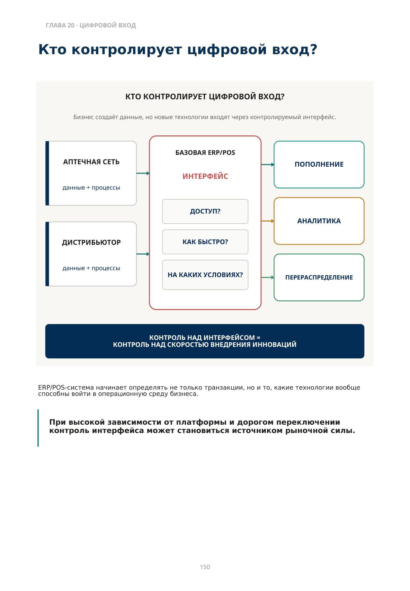
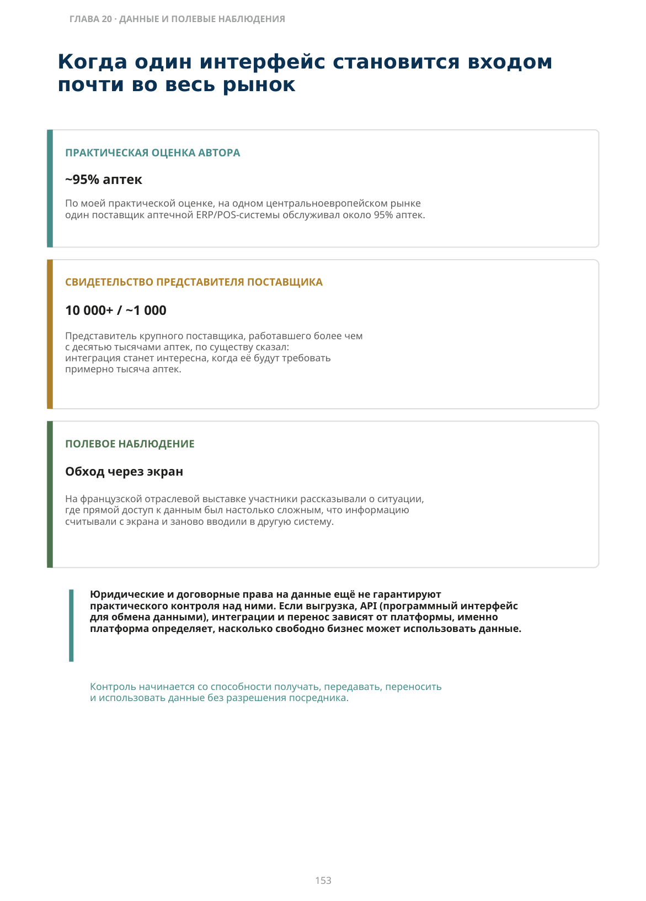
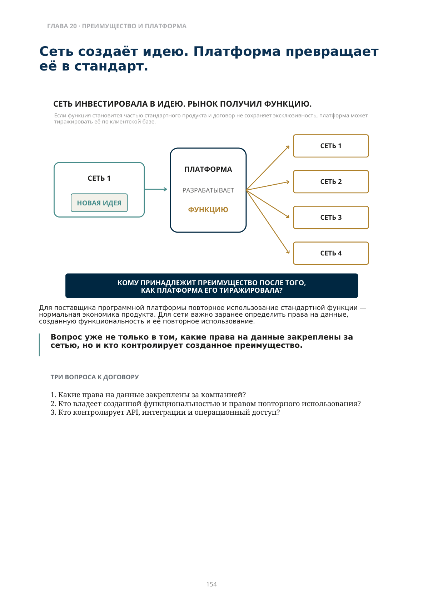
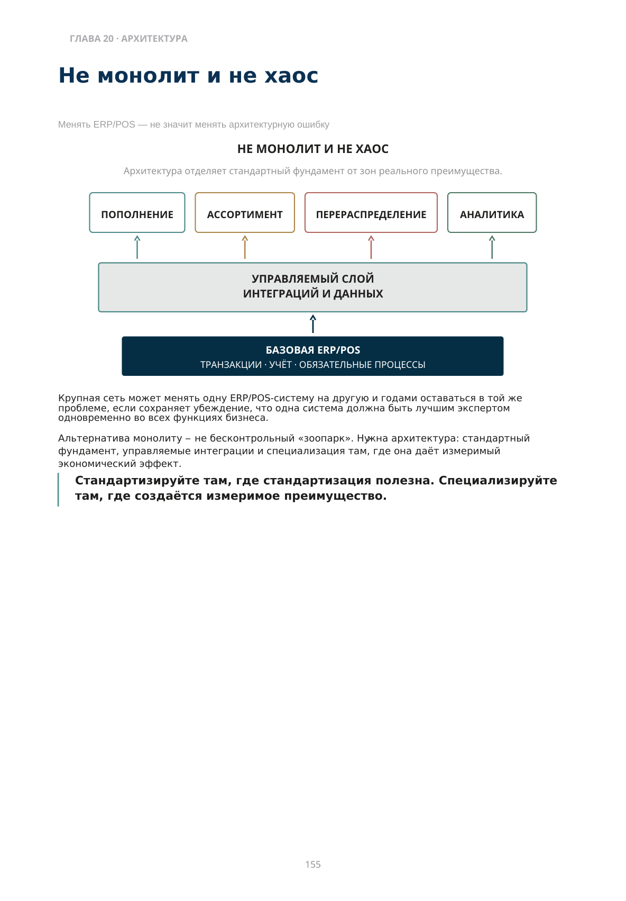

Кто контролирует цифровой вход?
Уровень над цепочкой
Глава 20 · ИТ как инфраструктура рынка
Мы закрыли три основных коммерческих звена фармацевтического рынка: аптечную сеть, дистрибьютора и производителя. Теперь нужно подняться на уровень выше. Есть силы, которые не являются следующим звеном цепочки, а пронизывают несколько звеньев сразу.
Мы закрыли цепочку. Теперь смотрим на силы, которые задают инфраструктуру и правила для всех её звеньев.
Первый слой — ИТ. Для аптечной сети и дистрибьютора цифровая инфраструктура определяет, кто видит данные, кто может подключить новую технологию, насколько быстро компания способна внедрить специализированное решение и может ли созданное преимущество остаться её преимуществом. Можно выиграть конкуренцию внутри рынка — и всё равно зависеть от того, кто контролирует цифровой вход в ваш бизнес.
ГЛАВА 20
ERP/POS, зависимость от поставщика, интеграции и специализированные технологии.
Какие юридические и договорные права компания имеет на свои операционные данные? Правовой режим зависит от типа данных и юрисдикции. Но даже при наличии таких прав остаётся другой вопрос: кто на практике контролирует доступ?
Кто контролирует цифровой вход?
ERP/POS-система начинает определять не только транзакции, но и то, какие технологии вообще способны войти в операционную среду бизнеса.
При высокой зависимости от платформы и дорогом переключении контроль интерфейса может становиться источником рыночной силы.

Описание схемы
FIG_076: Кто контролирует цифровой вход?
Схема цифрового входа сравнивает разных владельцев интерфейса — аптечную сеть, дистрибьютора и глобальный цифровой интерфейс — и функции вокруг поиска, контента, аналитики и перенаправления. Контроль над интерфейсом становится контролем над потоком и интерпретацией информации.
Почему выбор ERP/POS для аптеки часто узкий
Фармацевтическая розница предъявляет требования, которых нет в обычной рознице
На многих рынках аптечной системе нужны партии, сроки годности, прослеживаемость, рецепты, возмещение стоимости, фискальные требования и другие отраслевые функции. Без них система может быть практически непригодна.
| Функция | Почему она повышает зависимость |
|---|---|
| Партионный учёт и сроки годности | Не каждая универсальная розничная система поддерживает нужную глубину и рабочий процесс |
| Рецепты и возмещение стоимости | Нужны локальные интеграции и соответствие правилам конкретного рынка |
| Регуляторная прослеживаемость | Изменения законодательства требуют постоянной адаптации базовой системы |
| Продажи, запас и бухгалтерия | Замена ERP/POS-системы затрагивает почти всю операционную модель сразу |
В результате в отдельной стране может остаться несколько зрелых поставщиков — а иногда практически один доминирующий игрок. Чем уже выбор, тем выше стоимость смены системы и тем сильнее переговорная позиция поставщика.
Специализация сначала делает ERP/POS-систему ценной. Концентрация может сделать её практически незаменимой.
Формальная свобода выбора не всегда означает практическую свободу
Через несколько лет ERP/POS-система уже связана с продажами, закупками, остатками, бухгалтерией, фискальными процессами, рецептами, возмещением стоимости и историческими данными.
Поменять её можно. Но цена, риск и длительность проекта становятся настолько высокими, что решение о смене перестаёт быть обычным выбором поставщика. Если поставщик при этом ограничивает программный интерфейс или затягивает интеграции, у бизнеса появляются два неприятных вопроса:
Можем ли мы вообще выбрать лучший специализированный инструмент?
Если мы придумали преимущество, сколько времени оно останется только нашим?
Рынок может быть открытым по собственности и закрытым по программному обеспечению.
В такой конфигурации базовая система контролирует уже не только учёт. Она влияет на скорость, с которой инновация достигает бизнеса. Именно поэтому цифровая архитектура становится стратегическим вопросом собственника, а не только удобством ИТ-службы.
Когда один интерфейс становится входом почти во весь рынок
Юридические и договорные права на данные ещё не гарантируют практического контроля над ними. Если выгрузка, API (программный интерфейс для обмена данными), интеграции и перенос зависят от платформы, именно платформа определяет, насколько свободно бизнес может использовать данные.
Контроль начинается со способности получать, передавать, переносить и использовать данные без разрешения посредника.

Сеть создаёт идею. Платформа превращает её в стандарт.
Для поставщика программной платформы повторное использование стандартной функции — нормальная экономика продукта. Для сети важно заранее определить права на данные, созданную функциональность и её повторное использование.
Вопрос уже не только в том, какие права на данные закреплены за сетью, но и кто контролирует созданное преимущество.
- Какие права на данные закреплены за компанией?
- Кто владеет созданной функциональностью и правом повторного использования?
- Кто контролирует API, интеграции и операционный доступ?

Описание схемы
FIG_078: Сеть создаёт идею, платформа превращает её в функцию
Инвесторская сеть создаёт новую идею, затем платформа превращает её в функцию и тиражирует на несколько сетей. Вопрос схемы: кому принадлежит конкурентное преимущество после того, как оно платформизировано.
Не монолит и не хаос
Менять ERP/POS — не значит менять архитектурную ошибку
Архитектура отделяет стандартный фундамент от зон реального преимущества.
Крупная сеть может менять одну ERP/POS-систему на другую и годами оставаться в той же проблеме, если сохраняет убеждение, что одна система должна быть лучшим экспертом одновременно во всех функциях бизнеса. Альтернатива монолиту — не бесконтрольный «зоопарк». Нужна архитектура: стандартный фундамент, управляемые интеграции и специализация там, где она даёт измеримый экономический эффект.
Стандартизируйте там, где стандартизация полезна. Специализируйте там, где создаётся измеримое преимущество.

Цифровая свобода бизнеса
Уровень собственника · проверка этапа
ИТ-архитектура становится источником рыночной силы, когда компания контролирует собственные данные, понимает стоимость смены базовой системы и умеет подключать специализированные решения без потери контроля над данными.
| КОНТРОЛЬ ДАННЫХ | Только через поставщика | Есть выгрузки | Управляемые интерфейсы и слой данных |
|---|---|---|---|
| СКОРОСТЬ ИНТЕГРАЦИИ | Годы / невозможно | Ручные проекты | Стандартное подключение |
| СТОИМОСТЬ ДОСТУПА | Разумная | Существенная, но оправданная | Формально доступно, но цена блокирует |
| СТОИМОСТЬ СМЕНЫ ERP/POS | Не знаем | Оценивали частично | Есть реалистичный сценарий перехода |
| СПЕЦИАЛИЗАЦИЯ | Всё внутри ERP/POS | Есть отдельные системы | Специализация создаёт преимущество |
| АРХИТЕКТУРНЫЙ РИСК | Не управляется | Зависит от людей | Есть правила интеграций, безопасности и ответственности |
| КОНКУРЕНТНОЕ ПРЕИМУЩЕСТВО | Идеи быстро становятся стандартом | Частично защищаем | Понимаем, что должно оставаться собственным |
Цифровая свобода определяется не только тем, можно ли получить данные или подключить другую систему. Важно, можно ли сделать это технически, быстро и по экономически разумной цене.